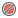

Conditional Breakpoints and Animation¶
Game:
- Set an initial position
- Change the string being displayed
- Implement animation via Arcade’s
updatemethod
Objectives¶
- Conditional breakpoints
- Suspend all breakpoints
- Clear all breakpoints
- Break on exceptions
Steps¶
Terminate the game, if it is running. (Remember:
 )
)Edit
game.pyto have the following:1 2 3 4 5 6 7 8 9 10 11 12 13 14 15 16 17 18 19 20 21 22 23 24 25 26 27 28
import arcade class MyGame(arcade.Window): def __init__(self, width, height, title): super().__init__(width, height, title) arcade.set_background_color(arcade.color.WHEAT) self.title = title self.position = 100 def on_draw(self): arcade.start_render() y = self.height / 2 message = f'{self.title}: {self.position}' arcade.draw_text(y, self.position, y, arcade.color.BLACK, 12) def update(self, delta_time): self.position += 1 def main(): game = MyGame(600, 600, 'Coin Game') arcade.run() return game if __name__ == '__main__': main()
- Line 9. We will constantly update the position of the label, so let’s initialize it with a starting position.
- Line 13. Center the text on the screen height.
- Line 14-15. Use Python 3.6 f-strings to make a label and draw it to the middle of the screen. Note that this is going to change every time line 18 updates the position.
- Line 18. Move the position one pixel to the right. This gets called
“a lot” by Arcade (where “a lot” can be configured.)
delta_timeis how long it has been sinceupdatewas last called.
Run under debugger. Make sure there are no breakpoints
 and click the green button (either on line 27 or in the debug window)
to run it under the debugger, just to see what it looks like.
and click the green button (either on line 27 or in the debug window)
to run it under the debugger, just to see what it looks like.Set first breakpoint. What’s
delta_time? Let’s take a look. Set a breakpoint on line 18 (self.position). Execution stops immediately anddelta_timeis a fraction of a second.Resume. Click to continue execution, which stops immediately at the same breakpoint. The
delta_timevalue is much bigger. Why? Because we were paused in the debugger and Arcade couldn’t do the nextupdatecall.Set conditional breakpoint. Let’s stop execution, but only when the text is halfway across the screen. Right-click on the breakpoint
image on line 18. In the Conditionbox, enterself.position > 300and clickDoneto close the popup.Re-run. Click the
Debugwindow’s re-run button to stop
and restart the application.
to stop
and restart the application.Program runs, then stops. The label moves across the screen a bit, then the program stops and the debugger takes over. What’s the value of
self.position? Expand the triangle forselfand take a look. (Pro tip: zoom down through a long list by typingposi.)Resume. Click and you’ll see that execution immediately stops again.
self.positionis now302. Keep clicking and watch the value go up.Shut up the breakpoints. Perhaps, for a moment, we don’t want any breakpoints in use. In the debug window, click mute breakpoints  to briefly turn them off. Click resume and the label starts moving again. Turn off muting by clicking and execution immediately stops.
Clear your breakpoints. As your sleuthing, you can pile up breakpoints and forget where they are. Click view breakpoints
 to bring up
a dialog of all your set breakpoints. Select any breakpoints in
to bring up
a dialog of all your set breakpoints. Select any breakpoints in
game.py, then click the minus button andDone. Your breakpoints are gone.Unhandled exception. PyCharm has a built-in breakpoint to stop on all unhandled exceptions. Let’s put in an error on line 15, changing
messagetoyas the firstdraw_textargument.Re-run. Your code changed, so in the debug window, click re-run to stop and restart.
Execution stops. Deep in Arcade, in
document.py, we have a line that fails because a string was expected (message) and we sent a number (y).Stop on Exceptions. What controls this? Click view breakpoints
and look at Any Exceptionunder thePython Exception Breakpointheading.Terminate. Click the red square
and close document.py.